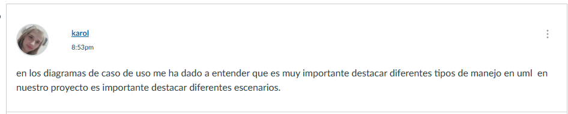
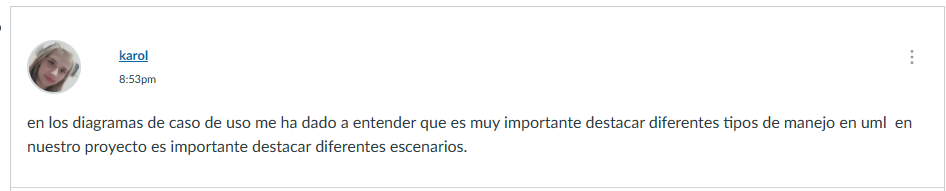

REQUERIMIENTOS:
la ingenieria de requisitos implica determinar y recopilar las necesidades y condiciones que se necesitan para el desarrollo del software nuevo , los requisitos deven ser claros medibles,verificables y libres. en la definicion de los requisitos la capacidad requerida por el usuario es requerida para la solucion del proble,a del usuario
INGENIERIA DE LOS REQUERIMIENTOS:
en este contexto el mayor el mayor objetivo es la ingenieria de requerimientos conosidos como "requerimiento del sistema "de los "requerimientos del software" los primeros se refieren a transformar las necesidades de los usuarios. mientas que el segundose dedica a descomponer el problema en diversos problemas pequeños i "subsistemas " el subsistema se encarga de ransformar los requerimientos en una especificación mas detallada para los arquitectosy diseñadores dl software.
lenguaje(UML)2.5 Y DESARROLLO DE SOFTWARE:
es un marco de trabajo que incrementa el desarrollo del software que utiliza UML para modelar sistemas de software , el cual proporciona derectrices detalladas para el desarrollo de productos de software. se utiliza espesificamente para diagramas de caso de uso , el modelado de la dinamica en UML se refiere a la presentación de los aspectos dinamicos de un sistema. UML permite modelar ciclos de vida de los objetos desde su creacion asta su destruccion.